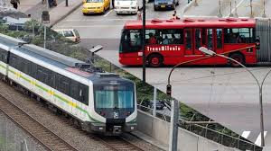
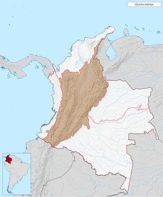
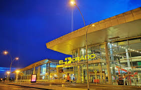
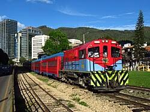
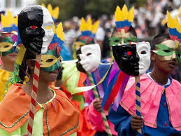
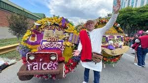
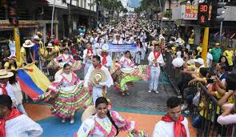
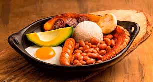
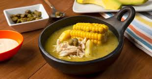
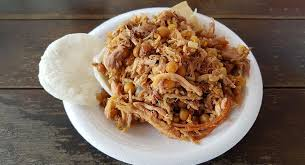

Medios de Transporte Terrestre
- Autobuses intermunicipales
- Chivas o buses escaleras
- Camperos Willys
- Sistemas de transportes masivo


La Región Andina de Colombia debe su nombre a la cordillera de los Andes. A su entrada al país,
esta se ramifica en tres grandes cadenas montañosas:
Occidental, Central y Oriental, caracterizadas por su alta actividad volcánica,
cumbres nevadas que superan los 5000 m s. n. m. y un relieve tectónicamente inestable.
La Región Andina de Colombia es la zona más poblada y económicamente activa del país.
Alberga a más de 37 millones de habitantes, lo que representa aproximadamente el 70%
de la población nacional. Esta densidad demográfica >se concentra principalmente en
grandes centros urbanos y valles interandinos.
La Región Andina es el motor económico, demográfico y agrícola de Colombia.
Concentra las mayores reservas hídricas, el 80% de la producción de café y las tres ciudades principales:
Bogotá, Medellín y Cali. Su subsuelo es rico en minerales, esmeraldas y petróleo.
El sistema de transporte en la Región Andina de Colombia es el más desarrollado
y complejo del país debido a que concentra el 70% de la población nacional y
conecta los principales centros económicos como Bogotá, Medellín y Cali.
Su infraestructura está fuertemente condicionada por la geografía de las tres cordilleras,
lo que prioriza el transporte terrestre y aéreo para superar la barrera de las montañas.



Las tres festividades más importantes de la Región Andina son el Carnaval de Negros y Blancos,
la Feria de las Flores y las Fiestas de San Juan y San Pedro, porque representan el mayor impacto cultural,
folclórico y turístico del interior de Colombia
Pasto, Nariño, 2 al 6 de enero. Patrimonio de la Humanidad por la UNESCO y la
fiesta más colorida del sur de Colombia. Destaca en la web por sus desfiles de carrozas
gigantes y los días de "negritos y blanquitos", donde la gente se pinta el rostro en símbolo de igualdad.

Medellín, Antioquia | Principios de agosto. Es la celebración andina más importante a nivel de impacto turístico,
identidad regional y proyección internacional. Su relevancia cultural es única porque rinde homenaje a la tradición silletera
—Patrimonio Inmaterial de la Nación—, transformando un oficio campesino de carga de flores en un majestuoso desfile
de arte vivo que posiciona la biodiversidad y el orgullo de la cultura paisa ante el mundo.

Huila y Tolima | Junio a julio. Es el festival folclórico y coreográfico más importante del interior de Colombia.
Su trascendencia radica en que es el eje central que preserva la música andina tradicional (bambucos, pasillos y sanjuaneros)
y define la identidad del Tolima Grande; el Reinado Nacional del Bambuco es la competencia dancística más rigurosa del país,
lo que convierte a esta festividad en el corazón del patrimonio folclórico nacional

La gastronomía de la región Andina se destaca por su variedad de tubérculos, maíz y carnes,
heredando recetas de raíces indígenas y españolas. Su oferta culinaria varía según la zona,
integrando ingredientes locales adaptados a sus diferentes climas y pisos térmicos.
El plato más abundante. Contiene frijoles, arroz, chicharrón, carne molida, chorizo,
huevo frito, tajada de plátano maduro, arepa y aguacate.

Sopa insignia de Bogotá. Lleva tres tipos de papa (criolla, pastusa y sabanera), pollo desmenuzado,
mazorca y guascas (hierba clave). Se acompaña con crema de leche y alcaparras.

Cerdo entero horneado. El cuero queda crujiente y se rellena con carne de cerdo picada,
arvejas amarillas y especias. No lleva arroz en su receta tradicional.
